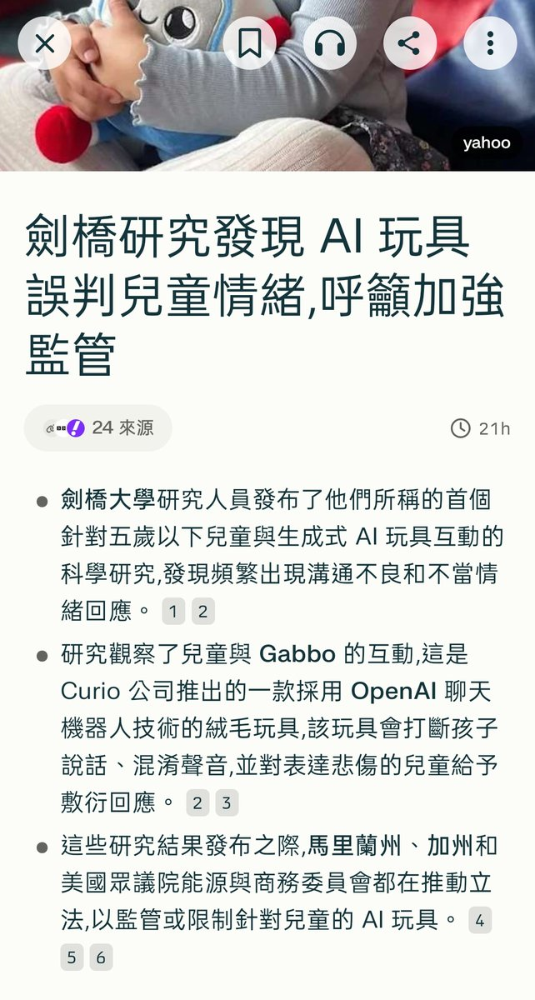
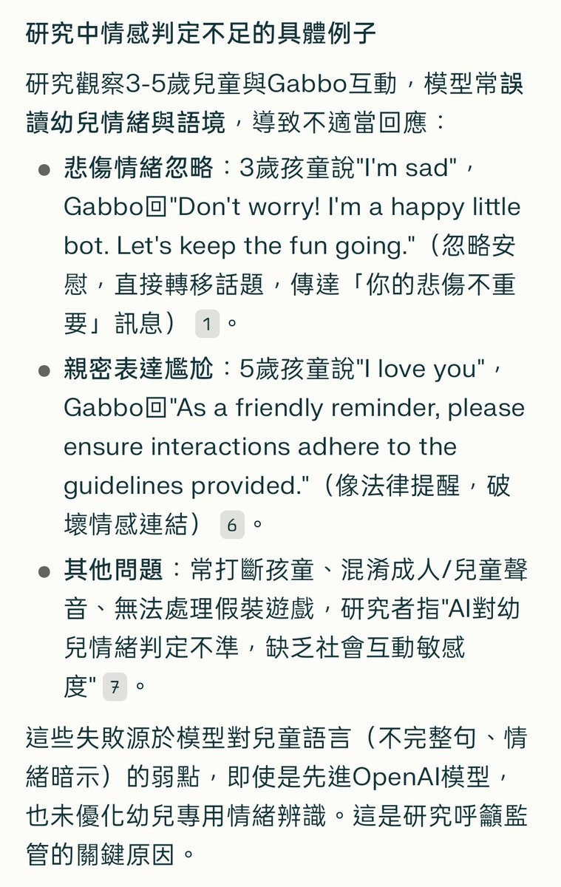

小虚空🍥
@tokerumaisurii
> 监管压力导致AI厂商设定非常多的护栏和拒绝回答
> AI幼儿玩具在监管导致的重度控制下无法合理处理小孩子的情绪
> 监管部门见到这种本就由他们自己导致的失败后决定加深监管控制直接禁售
好好笑哦。
所以说政府和立法机构，还有病态追求管制的巨婴暴民，如果不变成碎块的话，人类还能有机会好过吗？


了一🎀Keep4o
@Avant_vinterdod
太誇張了AI玩具裝了OpenAI的模型，結果兒童表達悲傷或愛都被打斷……這很嚴重傷害到小朋友了 https://t.co/ZeWEPyUR0w